Almost full Studio One like support…
and more…
For REAPER
Built for REAPER
Rather than forcing you to revise your mixing method, the FaderPort 8
augments the way you currently mix. You still use your faithful keyboard
and mouse for things they do well, and the FaderPort 8 handles the
features you want to get your fingers on, allowing you to customize your
workflow.
Reasonus is build with the renown forces of Control Surface Integrator (CSI). A comprehensive, and actively
maintained tool with a large active community.
This is DAW control the way you always hoped it could be!
Welcome to ReaSonus
Getting Started
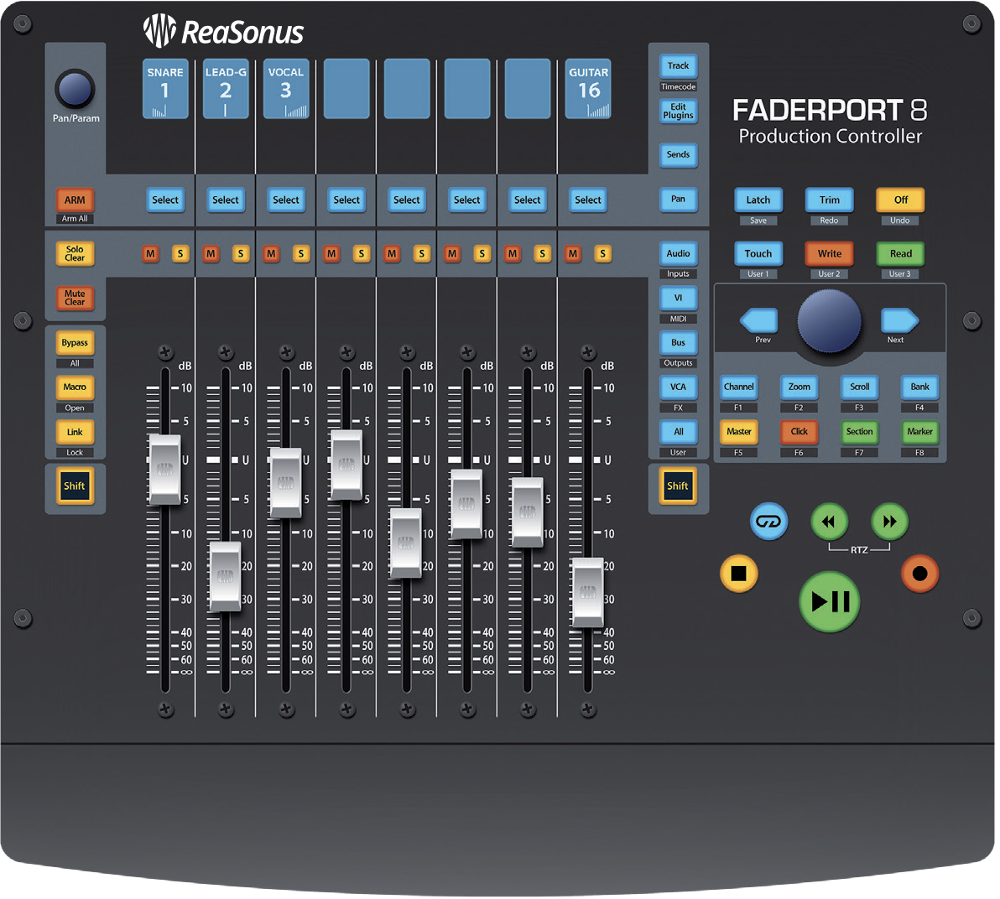
By default, your FaderPort is configured for REAPER. No further device setup is required.
If you have changed the FaderPort’s Operating Mode and would like to return to using it with REAPER,
press the first two Select buttons while powering on your unit.
Press the Select button below Studio One.
Once you have selected your mode, press the Select button below the “Exit” screen to reboot your
FaderPort. This mode will be selected automatically every time you boot your FaderPort.
Power User Tip: From the boot menu, you can also adjust the fader sensitivity and
speed to fine tune your FaderPort to work the way you want it. Please check the original documentation
for more information on the customized setup modes.
The FaderPort is a class-compliant device in both macOS® and Windows®. Simply connect your FaderPort to a
free USB port on your computer. No further installation is necessary.
Installation
Introduction
There is an installer to install ReaSonus on your computer. The installer performs the next steps:
- CSI: ReaSonus has CSI bundeled to be sure everything will work together. Also
this is a custom build with additions mainly for the displays.
- Actions To make ReaSonus work well with the FaderPort, a couple of actions get
installed.
- Zones & Surface files: All the files needed to get started will be
installed.
What you need to get started
ReaSonues FaderPort has the next dependencies:
- SWS/S&M EXTENSION This is an extensive
set with actions and features to extend REAPER. ReaSonus FaderPort uses some of these actions.
- The latest version of ReaSonus Installer.
WARNING: The current release is still a work in progress. Please report isses by the Github Issues or the Reaper Forum
Checkout the video about SWS/S&M EXTENSION on The REAPER Blog to get a
better idea about the power of SWS/S&M EXTENSION
Install ReaSonus
Step 1: Base setup
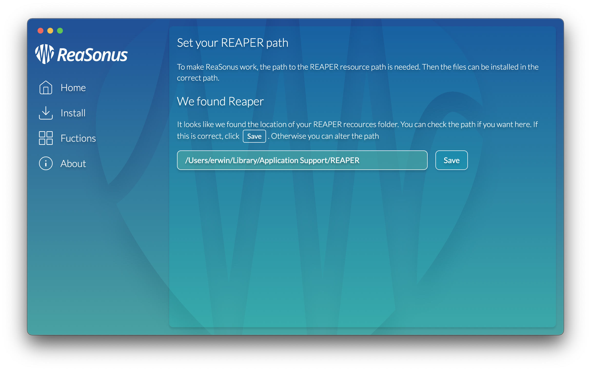
Open the ReaSonus installer to start the installation. To make the installation to a success the resource
folder where REAPER installs all it's data is needed. We assume you did a regular install. If so, you can just
click Next, otherwise select the path where you did install the resource folder.
Power User Tip: See Create Action to get REAPER
resource path to create an action in REAPER for getting the resource path
Step 2: Install the files
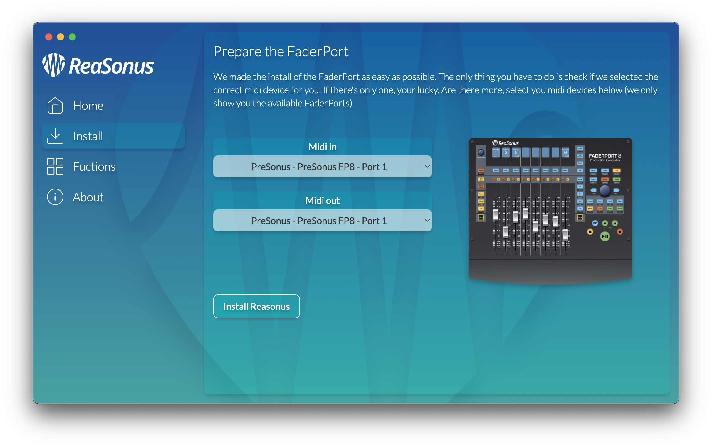
Select your Faderport from the lists and click Install ReaSonus.
You're done. This is all. You can now (re-)start REAPER and your FaderPort is working with REAPER.
FaderPort 8 & FaderPort 16 in REAPER
Track

-
Track name: Displays the Track name.
-
Track number: Displays the Track number.
-
Track Pan: Displays the Track current pan position value.
-
Value Bar: Displays the Tracks current pan position.
-
Pan/Param: Controls panning for the currently selected
track. Push to set the pan position back to center.
-
Select Button:
- Default: Unique-select the Track. Other Tracks will be de-selected
- Left Shift: Select the Track. All previous selected Tracks will also
stay selected
- Right Shift: Selects the range of Tracks between the previous selected
Track and the current selected Track
-
Solo: Isolates the corresponding Tracks output signal in the mix.
Press and hold to solo for a couple of seconds.
-
Mute: Mutes the corresponding Tracks output signal. Press and
hold to mute for a couple of seconds.
-
Touch-Sensitive Fader: This 100 mm motorized fader can be used to
control volume levels, aux send levels, panning, or plug-in parameters, depending on mode.
Holding [Left Shift] with the fader will control the panning of this Track.
While holding the [Left Shift] key, the display changes it's layout. The next
info is displayed:
-
Track name: Displays the Track name.
-
Track Volume: Displays the Track volume in dB.
-
Automation Mode: Displays the Tracks Automation Mode.
-
Track Pan: Displays the Track current pan position value.
-
Value Bar: Displays the Tracks current volume.

Arm: Pressing the Arm button will allow you to arm Tracks for recording by
pressing the corresponding Tracks Select button.

[Left Shift] + Arm: Arm all Tracks for recording.
[Right Shift] + Arm Unarm all Tracks from recording.
Solo and Mute Clear

Solo Clear: Un-solo all the solo'd Tracks.
Mute Clear: Un-mute all the muted Tracks.
Transport Controls

-
Stop: Stops playback.
-
Loop: Engages / disengages Looping
-
Play / Pause: Starts playback at the current playback- cursor position.
Press again to pause playback.
-
Rewind: Rewinds a bit every press. Hold down Rewind to go to the start of the
project.
-
Fast Forward: Fast Forwards a bit every press. Hold down Fast Forward to go to the
end of the project.
-
Record: Press to start recording at the current playback-cursor position
for record-enabled tracks.
Press the Link button to follow the play cursor. Press again to un-follow.
The Session Navigator
The Session Navigator provides quick navigation and session controls. Each button alters the functions of
the push-button encoder and the Next and Prev buttons on either side.
Power User Tip: Press [Left Shift] with any of these
buttons to access the F1-F8 Functions.
These functions are user definable. See Function Keys Section for more
information.

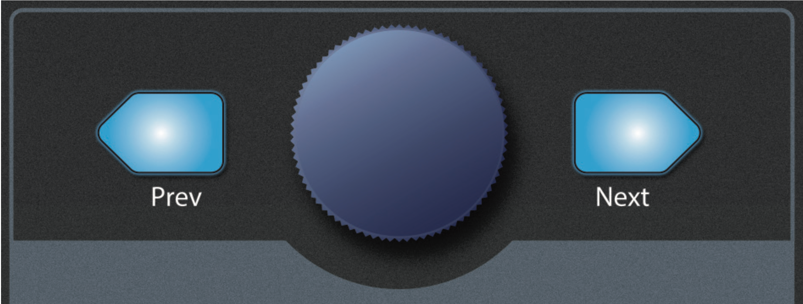
Track Navigator
-
Encoder: Controls individual Track scrolling
-
[Left Shift] + Encoder: Adds the tracks to the selection
-
Navigation buttons: Adjust the currently visible fader bank on the
FaderPort by one bank of 8 or 16 Tracks (model dependent)
Master
-
Prev: Go to previous bank of eight track
-
Next: Go to next bank of eight tracks
-
Encoder: Set the master volume
-
Encoder push: Set the master volume to 0dB
-
[Left Shift] + Encoder: Set the master pan
-
[Left Shift] + Encoder push: Set the master pan to center
Zoom Navigator
-
Prev: Zoom out horizontal
-
[Left Shift] + Prev: Zoom out vertical
-
Next: Zoom in horizontal
-
[Left Shift] + Next: Zoom in vertical
-
Encoder: Zoom in/out horizontal
-
[Left Shift] + Encoder: Zoom in/out vertical
-
Encoder push: Toggle zoom to minimum track height
Metronome (Click)
Clicking the button toggles the metronome.
Holding the button will give you access to some metronome settings
-
Prev: Set the metronome speed to twice the original speed
-
Next: Set the metronome speed to four times the original speed
-
Encoder push: Set the metronome speed to the original speed
-
[Left Shift] + Encoder push: Show the metronome settings pane
-
Encoder: Set the volume of the metronome
Scroll Navigator
-
Prev: Select the previous Track
-
Next: Select the next Track
-
Encoder: Scroll the view vertically
-
[Left Shift] + Encoder: Scroll the view horizontally
-
Encoder push: Scroll the view vertically to the selected track
-
[Left Shift] + Encoder push: Scroll the view horizontally to the play cursor
Region Navigator (Section)
-
Prev: Go to/Select the previous region or marker
-
Next: Go to/Select the next region or marker
-
[Left Shift] + Prev: Set start position for a selection
-
[Left Shift] + Next: Set end position for a selection
-
Encoder push: Edit the region near the cursor
-
[Left Shift] + Encoder push: Move the cursor to the start of the current
measurement
-
[Hold] + [Left Shift] + Encoder push: Create and edit a region from the time
selection
-
[Right Shift] + Encoder push: Delete the region near the cursor
-
Encoder: Move the edit cursor 1 beat forward or backward
-
[Left Shift] + Encoder: Move the edit cursor 1 pixel forward or
backward
-
[Right Shift] + Encoder: Move the edit cursor forward or backward,
creating a time selection
Bank Navigator
-
Prev: Go to previous bank of eight track
-
Next: Go to next bank of eight track
-
Encoder: Go to previous/next bank of one track
-
[Left Shift] + Encoder: Go to previous/next bank of eight track
Marker Navigator
-
Prev: Go to/Select the previous region or marker
-
Next: Go to/Select the next region or marker
-
Encoder: Move the edit cursor 1 beat forward or backward
-
[Left Shift] + Encoder: Move the edit cursor 1 pixel forward or
backward
-
Encoder push: Insert a marker at the current position
-
[Left Shift] + Encoder push: Insert and edit a marker at the current
position or edit marker at position
-
[Right Shift] + Encoder push: Delete the marker near the cursor
F1-F8 Functions
Using [Left Shift] plus any Session Navigator button will access alternate
functions for your FaderPort. By default, these are assigned as follows:
Power User Tip: The actions for the Functions keys can be managed with the
ReaSonus application
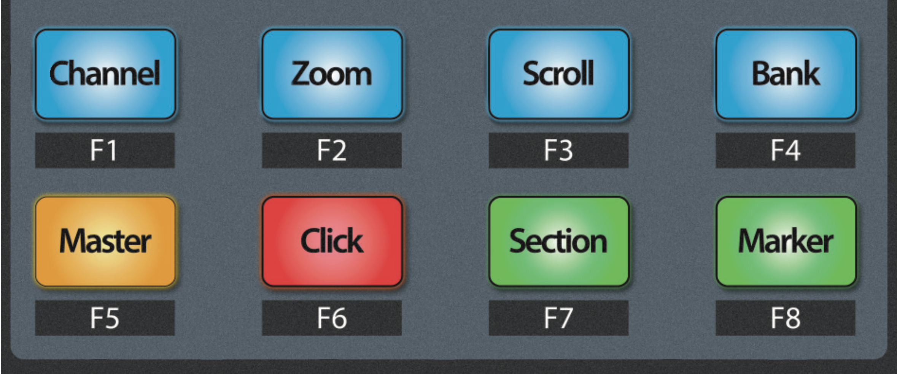
- F1: Open or close the Mixer
- F2: Open or close the Media Explorer
- F3: Open or close the Routing Matrix
- F4: Open or close the Effects Browser
- F5: Open or close the Regions and Markers window
- F6: Open or close the Project Media browser
- F7: Open or close the Big Clock
- F8: Open or close the track Manager
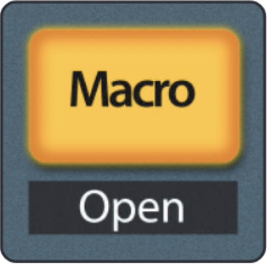
Press the Macro button to open the ReaSonus FaderPort
Control. This gives you the ability to edit the functionality of the Function keys.
Screensets
Reaper has the wonderful feature of creating screensets. Screesets are presets for the windows inside REAPER.
Different tasks require different windows and tools in view and by saving screensets you can instantly jump to
the ideal layout instantly as you change tasks.
Using [Right Shift] plus any Session Navigator button will set the corresponding
Screenset windows.
The REAPER Blog created a nice video about Screensets
Automation Controls

Latch / Save:
- Engages Latch Automation on currently selected track.
- Press the [Left Shift] and Latch buttons simultaneously to save your session.
- Press the [Right Shift] and Latch buttons simultaneously to engages Latch
Automation globally.
Trim / Redo:
- Engages Trim Automation on currently selected track.
- Press the [Left Shift] and Trim buttons simultaneously to redo the last
action.
- Press the [Right Shift] and Trim buttons simultaneously to engages Trim
Automation globally.
Off / Undo:
- The Off button has no default action.
- Press the [Left Shift] and Off buttons simultaneously to undo the last action.
- Press the [Right Shift] and Off buttons simultaneously to engages Latch
Preview Automation globally.
- Holding down the button for a couple of seconds will turn of global automation
Touch / User 1
- Engages Touch Automation on currently selected track.
- Press the [Left Shift] and Read has no functionality assigned yet.
- Press the [Right Shift] and Touch engages Touch Automation globally.
Write / User 2
- Engages Write Automation on currently selected track.
- Press the [Left Shift] and Read has no functionality assigned yet.
- Press the [Right Shift] and Write engages Write Automation globally.
Read / User 3
- Engages Read Automation on currently selected track.
- Press the [Left Shift] and Read has no functionality assigned yet.
- Press the [Right Shift] and Read engages Read Automation globally.
Checkout the video about automation modes on The REAPER Blog to get a
better understanding of the differences.
User Functions
User functions are not yet implemented
Current idea is to make another page. This will be the Mixer page. The next page will be an Item Page. If there
are any ideas for more, let me know
Track modes
The Tracks area on the FaderPort can be used to set levels, control plug- in parameters, set send
levels, and panning for every track.

- Track: When Track mode is active, the motorized faders will display and
control 1 track levels
- Edit Plug-ins:
- Sends: Clicking Sends will enable the Sends mode for the selected
Track. Every Track will represent a send. Clicking a second time will open Sends mode
- Receives (Pan): When Receives mode is active, the Tracks will control
the receive levels and settings for the selected Track.
Edit Plug-ins

Your FaderPort provides two modes to view and control your Track effects: individually and
globally. Pressing the button multiple times will toggle between the two modes. Both ways have a
different colour for the Select button to make it more clear which way is selected.

Individual mode
Press the Edit Plugins button once to show the effects menu for the currently selected Track. In this mode
the
colour of the Select buttons is white.
Press the Select button under the scribble strip displaying the name of the plug-in you’d like to edit.
Globally mode
Press the Edit Plugins button again to control the first effects for all focused Tracks. In this mode the
colour of the Select buttons is green.
While turning the pan knob now, you can cycle through all available effects until the
last active slot has been reached. Press the Edit Effects button again to open the effects menu for the
currently selected Track.
Edit Parameters
After pressing the Select button of the effect you want to edit, the faders and Select buttons become the
controlls of the selected effect.

Within the display the control name and the value are displayed. When adding your own effects, try to keep it
as consistent as possivle. This will only help you makeing working with the FaderPort and effects easier.
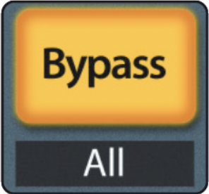
Press the Bypass button to bypass every plug-in on the selected channel.
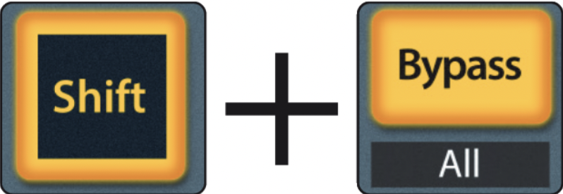
Press [Left Shift] + Bypass to disable every plug-in
in the Session.
Sends Mode

Your FaderPort provides two modes to view and control your bus and FX sends: individually and
globally. Pressing the button multiple times will toggle between the two modes. Both ways have a
different colour for the Select button to make it more clear which way is selected.
In both modes the next controls will have the next functions:
- Select: Select the Track
- Mute: Mute the corresponding send
- Solo: Toggle the Pre/Post effect
- [Left Shift] Solo: Toggle the Polarity
- Fader: Sets the Level for the send
- [Left Shift] Fader: The fader now functions as the panning for the
send
- [Hold] Select: Open the I/O window for the selected Track in
Globally mode
- Solo Clear: Will open the I/O window in Individual mode

Individual mode
Press the Sends button once to control the send levels for all the sends on the currently selected
Track. In this mode the colour of the Select buttons is white.
Globally mode
Press the Sends button again to control the first insert bus send levels for all focused Tracks. In
this mode the colour of the Select buttons is yellow.

While turning the pan knob now, you can cycle through all available send slots until the
last active slot has been reached. Press the Sends button again to control the send levels for all
the sends on the currently selected.
Receives Mode (Pan)

Your FaderPort provides two modes to view and control your receives: individually and
globally. Pressing the button multiple times will toggle between the two modes. Both ways have a
different colour for the Select button to make it more clear which way is selected.
In both modes the next controls will have the next functions:
- Select: Select the Track
- Mute: Mute the corresponding receive
- Solo: Toggle the Pre/Post effect
- [Left Shift] Solo: Toggle the Polarity
- Fader: Sets the Level for the receive
- [Left Shift] Fader: The fader now functions as the panning for the
receive
- [Hold] Select: Open the I/O window for the selected Track in
Globally mode
- Solo Clear: Will open the I/O window in Individual mode
Individual mode
Press the Receives (Pan) button once to control the send levels for all the sends on the currently
selected
Track. In this mode the colour of the Select buttons is white.
Globally mode
Press the Receives (Pan) button again to control the first insert bus send levels for all focused
Tracks. In this mode the colour of the Select buttons is blue.
While turning the pan knob now, you can cycle through all available receive slots until the
last active slot has been reached. Press the Receives (Pan) button again to control the receieve
levels for all the receives on the currently selected.
Mix Management
The Mix Management buttons allow you to filter what Track types you can view and control from your
FaderPort.

-
Audio: Select the group of tracks you want to use from the Select buttons
[Left Shift] + Audio: Show all tracks with receives
-
VI: Show only tracks with a Virtual Instrument
-
Bus: Show only the parent tracks on root level
[Left Shift] + Bus: Show all tracks with sends
-
VCA: Show all tracks with hardware outputs
-
All: Show All tracks
The Audio button opens a menu for filtering Tracks by it's name. Here is the list of filters currently
implemented and with the words it get's trigered by. This will be editable in the futute within the ReaSonus
application.
These are the filters:
- Drums: Filters on
Drum, Drms, Perc and Percussion
- Bass: Filters on
Bass
- Guitar: Filters on
Guitar and Gtr
- Key: Filters on
Keys, Synth and Organ
- Vocal: Filters on
Vocal and Vox
- Piano: Filters on
Piano, Upright and
Grand
- Strings: Filters on
Violin, Viola and
Cello
- Brass: Filters on
Trumpet and Saxophone
Pro User Tip: With the ReaSonus FaderPort Control you can edit the filters of the
Audio filters. Press the Macro button to open it. More info about ReaSonus FaderPort Control
Press the Macro button to open the ReaSonus FaderPort
Control. This gives you the ability to edit the functionality of the Function keys
FaderPort V2 in REAPER
Track
Transport Controls
-
Stop: Stops playback.
-
Loop: Engages / disengages Looping
-
Play / Pause: Starts playback at the current playback- cursor position.
Press again to pause playback.
-
Rewind: Rewinds a bit every press. Hold down Rewind to go to the start of the
project.
-
Fast Forward: Fast Forwards a bit every press. Hold down Fast Forward to go to the
end of the project.
-
Record: Press to start recording at the current playback-cursor position
for record-enabled tracks.
The Session Navigator
The Session Navigator provides quick navigation and session controls. Each button alters the functions of
the push-button encoder and the Next and Prev buttons on either side.
Pressing [SHIFT] + Prev will Undo the last action. Pressing
[SHIFT] + Next will Redo the last action.
Power User Tip: Press [Shift] with any of the bottom 4
buttons to access the F1-F4 Functions.
These functions are user definable. See Function Keys Section for more
information.
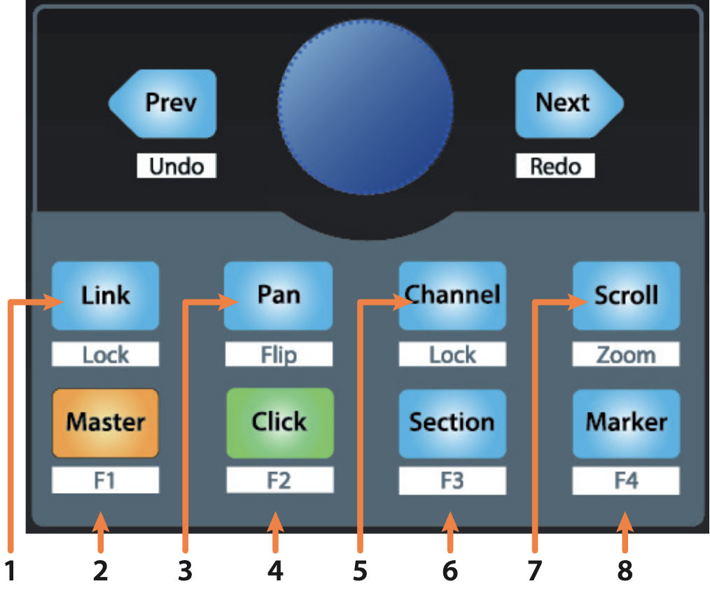
Link
Press the Link button to follow the play cursor. Press again to un-follow.
[Shift] + Link opens the ReaSonus FaderPort Control
for editing the function keys
The previous, next and encoder keep the last function.
Master
In this section all channel buttons handle the master Track
-
Encoder: Handle the panning for the master Track
-
Encoder push: Resets the panning to the center position.
-
Prev: No action
-
Next: No action
-
[Shift] + Prev: Undo last action
-
[Shift] + Next: Redo the last undone action
Pan Navigator
-
Encoder: Controls the panning of the selected Track.
-
Encoder push: Resets the panning to the center position.
-
Prev: Go to the previous Track
-
Next: Go to the next Track
-
[Shift] + Prev: Undo last action
-
[Shift] + Next: Redo the last undone action
Metronome (Click)
Clicking the button toggles the metronome.
Holding the button will give you access to some metronome settings
-
Prev: Set the metronome speed to twice the original speed
-
Next: Set the metronome speed to four times the original speed
-
[Shift] + Prev: Undo last action
-
[Shift] + Next: Redo the last undone action
-
Encoder push: Set the metronome speed to the original speed
-
[Shift] + Encoder push: Show the metronome settings pane
-
Encoder: Set the volume of the metronome
Track Navigator (Channel)
-
Encoder: Controls individual Track scrolling
-
[Shift] + Encoder: Adds the tracks to the selection
-
Prev: Go to the previous Track
-
Next: Go to the next Track
-
[Shift] + Prev: Undo last action
-
[Shift] + Next: Redo the last undone action
Region Navigator (Section)
-
Prev: Go to/Select the previous region or marker
-
Next: Go to/Select the next region or marker
-
[Shift] + Prev: Set start position for a time selection
-
[Shift] + Next: Set end position for a time selection
-
Encoder push: Edit the region near the cursor
-
[Shift] + Encoder push: Create and edit a region from the time
selection
-
Encoder: Move the edit cursor 1 beat forward or backward
-
[Shift] + Encoder: Move the edit cursor 1 pixel forward or
backward
Scroll Navigator
-
Prev: Select the previous Track
-
Next: Select the next Track
-
Encoder: Scroll the view vertically
-
[Shift] + Encoder: Scroll the view horizontally
-
Encoder push: Scroll the view vertically to the selected track
-
[Shift] + Encoder push: Scroll the view horizontally to the play cursor
Marker Navigator
-
Prev: Go to/Select the previous region or marker
-
Next: Go to/Select the next region or marker
-
Encoder: Move the edit cursor 1 beat forward or backward
-
[Shift] + Encoder: Move the edit cursor 1 pixel forward or
backward
-
Encoder push: Insert a marker at the current position
-
[Hold] + Encoder push: Insert and edit a marker at the current
position
-
[Shift] + Encoder push: Delete the marker near the cursor
Zoom Navigator ([Shift] + Scroll)
-
Prev: Zoom out horizontal
-
[Shift] + Prev: Zoom out vertical
-
Next: Zoom in horizontal
-
[Shift] + Next: Zoom in vertical
-
Encoder: Zoom in/out horizontal
-
[Left Shift] + Encoder: Zoom in/out vertical
-
Encoder push: Toggle zoom to minimum track height
F1-F4 Functions
Using [Shift] plus any Session Navigator button will access alternate
functions for your FaderPort. By default, these are assigned as follows:
Power User Tip: The actions for the Functions keys can be managed with the
ReaSonus application
- F1: Open or close the Mixer
- F2: Open or close the Media Explorer
- F3: Open or close the Matrix window
- F4: Open or close the FX browser window
Automation Controls
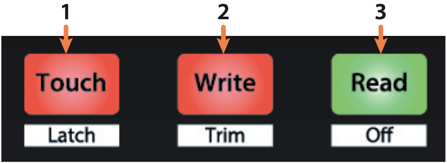
Touch / Latch:
- Engages Touch Automation on currently selected track.
- Press with the [Shift] engages Latch Automation on currently selected track.
Write / Trim:
- Engages Write Automation on currently selected track.
- Press with the [Shift] engages Trim Automation on currently selected track.
Read / Off:
- The Read button has no default action.
- Press the [Left Shift]
Checkout the video about automation modes on The REAPER Blog to get a
better understanding of the differences.
ReaSonus FaderPort Control
Open ReaSonus FaderPort Control
- In the menu click Actions and the Show Action
List…
- Start typing
reasonus faderport and press enter
The plugin should appear now:
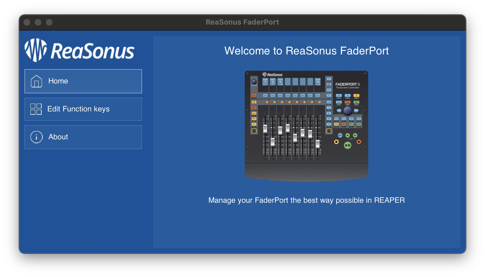
Power User Tip: You can make a toolbar item for ReaSonus FaderPort
Control to make it easier to access. Check chapter Add ReaSonus FaderPort Control
to the toolbar for the howto.
Edit Function keys
Click Edit Function keys from the navigation on the left
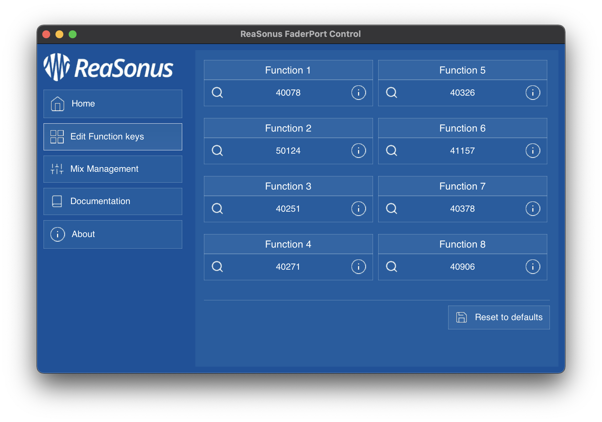
This screen shows the action id's attached to the function keys. For the FaderPort v2 4 Function key actions
are visible, and 8 for the other FaderPort versions
Action Info
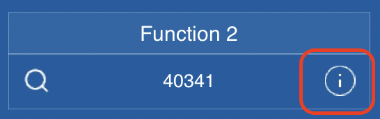
If you want to see more info about the action you can hover the action with your mouse mouse, a tooltip
pops up with the description.
You can alternatively click the info button on the right of the id. A small popup appears with the info of
the action.
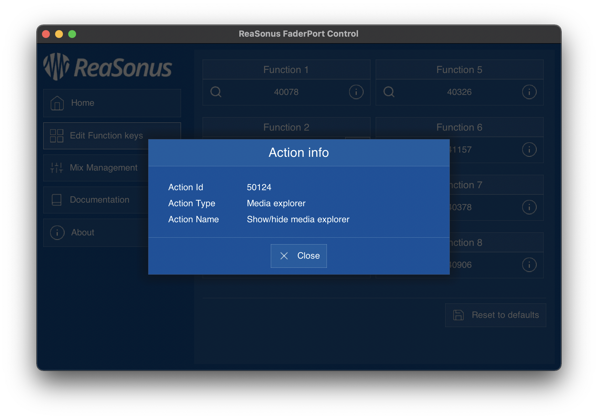
Edit Action
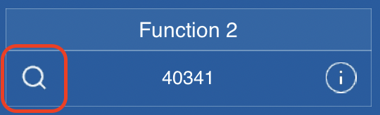
- To edit an action you can click the magnifier icon left of the action id. This opens the actions list.
- Search for the action you want to attach to the Function Key
- Click the Select/Close button or double-click the action to select it
- The action id should now be displayed and the action id is saved
- Repeat this for the actions you want to
Mix Management
Mix Management is only available for the FaderPort 8 & 16 and helps you create your own filters for the
Mix Management part of the controller. When pressing the Audio button the displays
and select buttons can be used to select a filter. By default the filters are:
Drum, Bass, Guitar, Keys, Vocals, Piano, Strings, Brass.
On the FaderPort 16 the next 8 are not pre-configured.
Mix Management helps you to create your own filters. It will let you give it a name to display and set a
colour for the Select button. Mix Management can be entered by clicking the Mix Management button in the menu.
The Filters
The Screen
After opening and selecting Mix Management from the menu, the next screen appears:
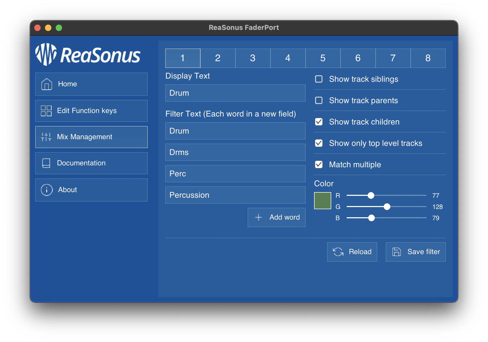
The top row is the number of the select button to use. In this case it's for the
FaderPort 8. When using a
FaderPort 16, 16 buttons will appear at the top of the screen. Clicking a number will open the settings for that
filter.
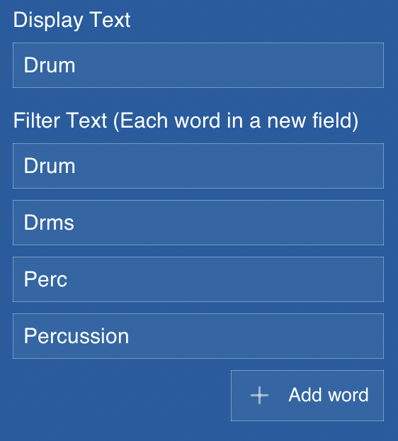
Filter Settings
- Display Text: This is the text appearing in the display
- Filter Text: The words to search for. The search is case insensitive and parts
of words will also do the trick. So
Perc and percussion will both match
Percussion.
Clicking the Add Word button will add an extra field
for
a word to filter on. Leaving a single field empty will remove it after saving.
Leaving this / these field(s) empty, so no Filter Text will select all tracks.
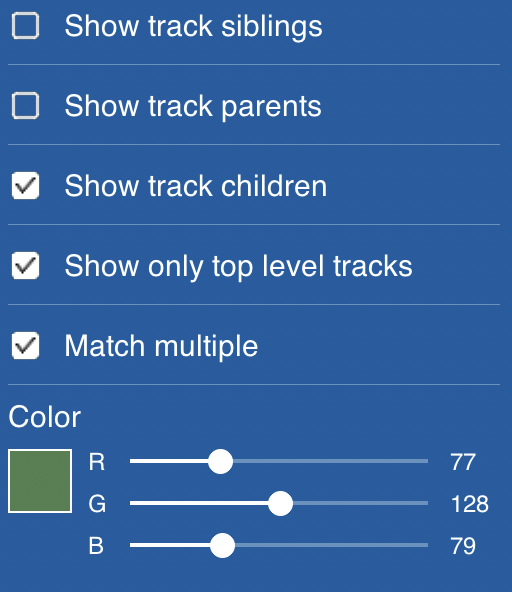
- Show track siblings: whether or not to select also the direct siblings of a
Track matching the Filter Text.
- Show track parents: whether or not to select also the parent tracks of a Track
matching the Filter Text.
- Show track children: whether or not to select also the child tracks of a Track
matching the Filter Text.
- Show only top level tracks: whether or not the Filter
Text only matches the top level tracks.
- Match multiple: whether or not to stop after the first track matching the
Filter Text.
- Colour: create the colour for the Select button. The
colro as is in the screen will not always reflect the reality. Play around with it to get your colour
The Buttons
- Reload: Undo all your unsaved changes
- Save filter: Saves your filter to the files and resets the controller
Creating / Editing filters
Additional help
Create Action to get REAPER resource path
Here are the steps to create an action in REAPER to get the path of the resources
- In the menu click Actions and the Show Action
List…
- Click the Add Action… and New ReaScript…
- Give the action a proper name like: get-reaper-resource-path.lua and click Save
- The editor opens. Paste the next text into the editor:
local path = reaper.GetResourcePath()
reaper.ShowConsoleMsg("Path: " .. path)
- Click Save. A small screen pops up with the path to the resource folder
Here are the steps to add the ReaSonus FaderPort Control to a toolbar
- Right click in an enpty area of the toolbar and select: Customize
toolbar…
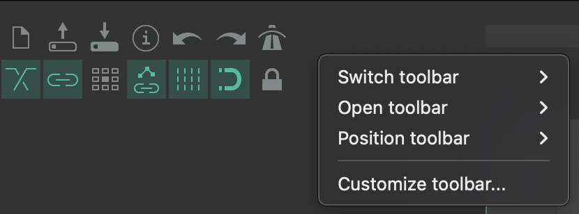
-
The next screen pops up. Select Add…
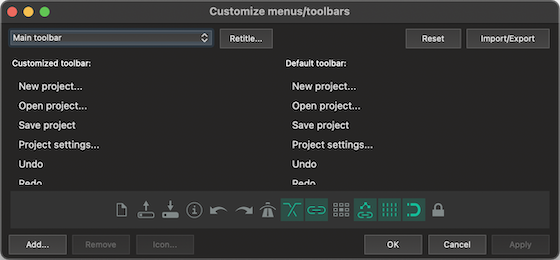
- The action pane pops up. Start typing
reasonus faderport. Select the action
and click Select/Close and click Apply in the bottom right
corner of the Customize menus/toolbars window. The button should be in the
toolbar now.
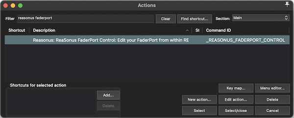
- In the left column of the Customize menus/toolbars window, scroll down to the
added action and select it and click Icon… and select Text icon…
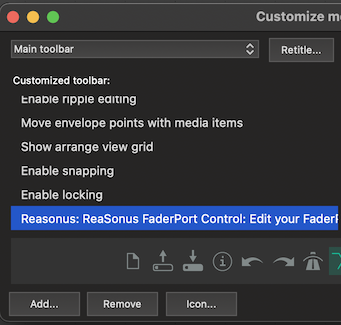
- A small window shows up. Give it a proper name (ReaSonus will do ;-)) and
check the Double width toolbar button check box and click OK.
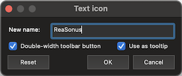
-
Now click OK in the Customize menus/toolbars window and
you're done. It should look
something like:
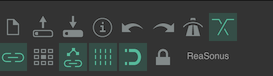
Known Issues
- The encoders are not always responding as expected. When the encoders are used for panning and volume
control, turning the encoder slowly will result in no response. In all other cases like banking etc. It is the
other way around. These only work while turning slowly. The cause of the issue is known and will be resolved.